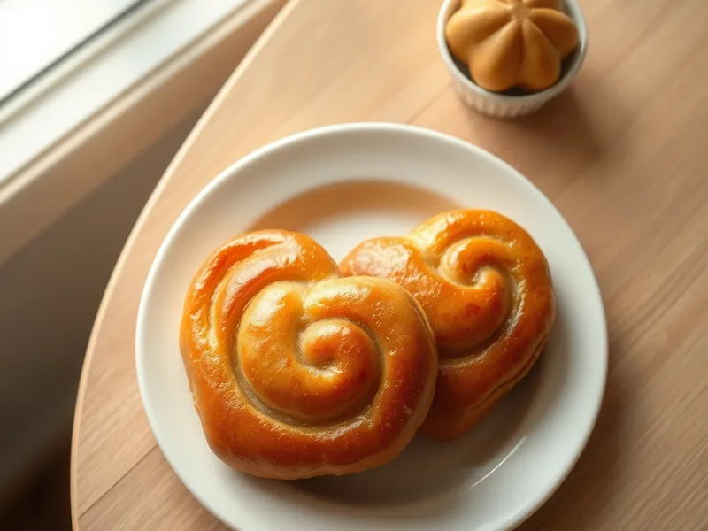

Плюшки московские с сахаром
Сдобные булочки-сердечки, свёрнутые с сахаром, с блестящей карамельной корочкой
140 мин12 порц.305 ккал на порциюБ 7 · Ж 11 · У 45Русская кухня
Открыть в приложении: порции, таймеры, список покупок
Продукты на 12 порц.
- Мука пшеничная500 г
- Молоко1,25 стак.
- Дрожжи сухие2 ч. л.
- Сахар160 г
- Яйцо куриное3 шт
- Сливочное масло120 г
- Соль0,75 ч. л.
- Ванильный сахар1 шт
Как готовить
- Растворите дрожжи и 1 ч. л. сахара в тёплом молоке и оставьте на 10 минут. Добавьте 2 яйца, ещё 70 г сахара, ванильный сахар, 80 г растопленного масла, соль и муку. Вымесите мягкое тесто 8-10 минут и оставьте в тепле на 60 минут.
- Разделите тесто на 12 частей, каждую раскатайте в овал толщиной 5 мм. Смажьте оставшимся растопленным маслом и посыпьте сахаром, оставив 2 ст. л. для верха.
- Сверните овал рулетом по длинной стороне, затем согните пополам, соединив концы. Разрежьте по сгибу, не доходя до концов 1 см, и разверните половинки в стороны срезами вверх - получится сердечко.
- Выложите плюшки на противень с бумагой и оставьте на 20 минут. Смажьте взбитым яйцом и посыпьте оставшимся сахаром.
- Выпекайте 20 минут при 180 °C (средний жар) до тёмно-золотистого цвета и блестящей карамели на срезах.
Совет. Перекладывайте плюшки на решётку сразу после выпечки: на противне карамель застывает и приклеивает их к бумаге.